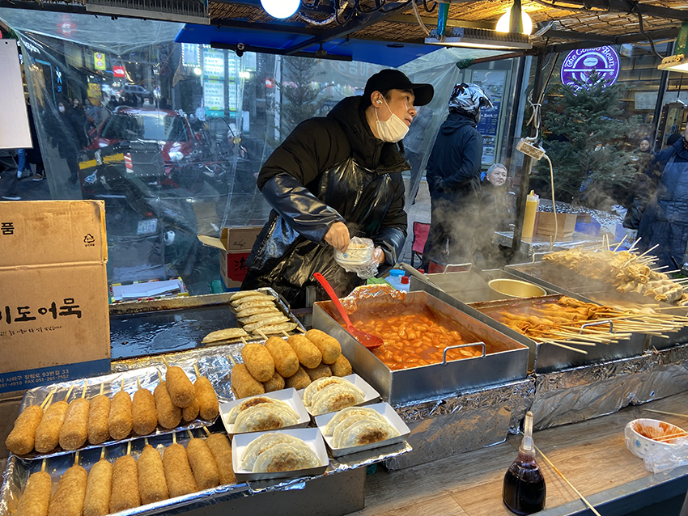
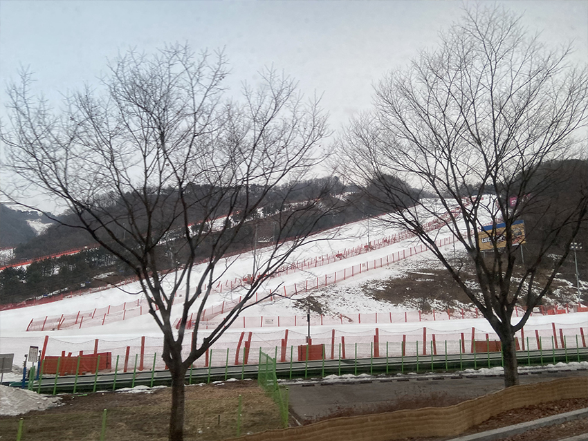
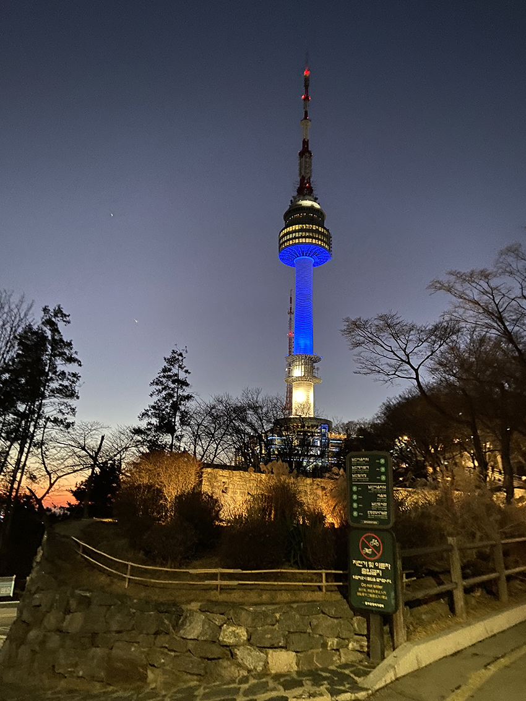

一個充滿時尚潮流卻又保有傳統價值及儒家思想文化的國家—韓國，在疫情逐漸趨緩的解封時期，終於得以前往體驗當地風情！五天四夜自由行的安排，首先，網羅蒐集了具代表性的韓國景點，規劃了必玩必吃清單，最後就是身體力行的出發前往韓國首都—首爾。
首爾觀光勝地—明洞商圈
聚集了各大美妝與服飾品牌，以及韓國美食和當地小吃，明洞商圈是初次來到首爾的必訪之地！為了迎接眾多的觀光客，商圈內的店家大多都會提供外語服務，無論是中文、英文皆可以順利溝通。
來到明洞商圈要做的首要事情就是—兌換韓幣，來韓國旅遊的小撇步，那就是到當地換錢所來兌換最划算，而在眾多換錢所中，明洞商圈內的換錢所通常是匯率最好的！既能兌換當地貨幣，又是觀光一級戰區，因此明洞商圈很推薦成為自由行夥伴們的第一站選擇。爾後就可以開始品嚐商圈內的各式韓國小吃囉，最具代表性的韓國美食—炸醬麵、糖醋肉、辣炒年糕、魚板、起士熱狗等，在明洞商圈裡都能大飽口福！
|  |
走著走著看到韓劇裡常出現的街頭攤販，馬上就吸引住我的目光，在攤販旁品嚐著在地小吃，配著暖暖的熱湯，在首爾寒冷的二月天裡，真是一大享受啊！
韓國滑雪—洪川大明維爾瓦第度假村冰雪王國
位於離首爾市區約90分鐘車程的滑雪度假村，是行前在旅遊平台預先買好的一日行程，省去了自由行的交通不便，直接搭乘滑雪場的交通車前往目的地，亦有滑雪教練指導初次滑雪的團員，以及雪衣、雪褲等滑雪裝備租借服務，十分便利！洪川大明維爾瓦第度假村冰雪王國裡，還有許多附加設施，其中的冰雪王國即便是不滑雪也很好玩，另外還有觀光纜車，以及度假村內的汗蒸幕與戶外溫泉SPA，滑雪累了也有美食街、購物商場等選擇，一次滿足了觀光客們的眾多需求呢！
|  |
於旅遊平台上，可以自由選擇度假村內設施的票券加購組合，滑雪教練亦可以教學語種去選擇，而在上完約略一小時的滑雪課程後，就開始自由活動體驗滑雪樂趣囉！無論是欣賞白雪皚皚的美景，又或是體驗滑雪的速度快感，這次的滑雪初體驗，讓我在韓國必玩清單中打上一個完美的勾！
首爾必去市場—廣藏市場
大名鼎鼎的韓國傳統市場—廣藏市場，是首爾最大傳統市場，市場內有眾多店家，再加上附近交通方便，非常值得走一趟體驗韓國傳統市場攤販美食！
行前就有羅列廣藏市場內的美食清單，其中有，名店「順熙家綠豆煎餅」，在此體驗了傳統綠豆煎餅、生章魚拌生牛肉等，其中又以生章魚在嘴裡蠕動的體驗最令人印象深刻，推薦來體驗看看！爾後接續品嚐了韓式飯捲、血腸、辣炒年糕、藥粿等美食體驗，真的是大大滿足啊！
除了眾多傳統美食以外，廣藏市場亦有許多店家攤販，可以看到布匹批發、小雜貨店、韓式餐具等，得以一探韓國傳統市場的魅力！
韓服體驗—景福宮
韓服一定是來到韓國的必經體驗，於行前亦可於旅遊平台購買好韓服體驗租借行程，再自行前往店家挑選韓服，此外，女生還有免費編髮服務呢！完成了韓服挑選後，接下來就是穿越時空來到韓國規模最大、建築設計最美麗的宮闕—景福宮，這裡分享一個小撇步，只要穿著韓服，就能享受景福宮門票免費福利，大家可以將行程安排在一起一同體驗。
|  |
夜景首選—南山首爾塔
韓國知名地標—南山首爾塔，也是來到韓國的必去清單之一，前往首爾塔有許多交通方式，可以選擇首爾塔纜車、公車、計程車等方式，這次我選擇了搭乘公車前往，正因如此，在傍晚交錯夕陽西下的時間，很幸運地看到橘色天空與夜色交錯的美景，使得公車上的乘客，不約而同發出驚嘆聲，接著在下站後就可以看到壯觀的南山首爾塔在眼前囉！
沿途暮色瀰漫，燈火闌珊，在登上首爾塔之前已經陶醉在這美景當中。在完成首爾塔購票之後，就是等候號碼順序準備登塔囉，接著出現在眼簾的，就是迷人的百萬夜景，實在不虛此行呢！
短短的五天四夜雖然無法去遍韓國各個角落，但在這疫情終於趨緩的時期能夠再次旅行，是多麼令人感動珍惜，在未來，我已迫不及待要再走遍各地探索這未知的世界！